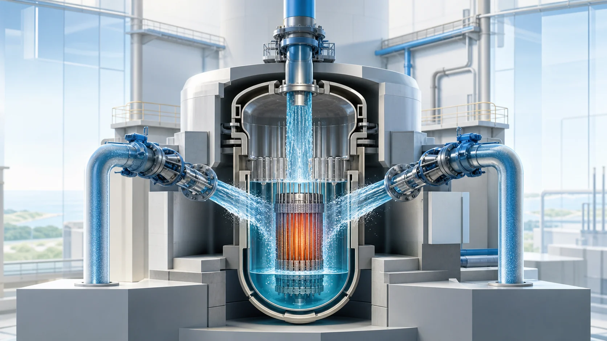
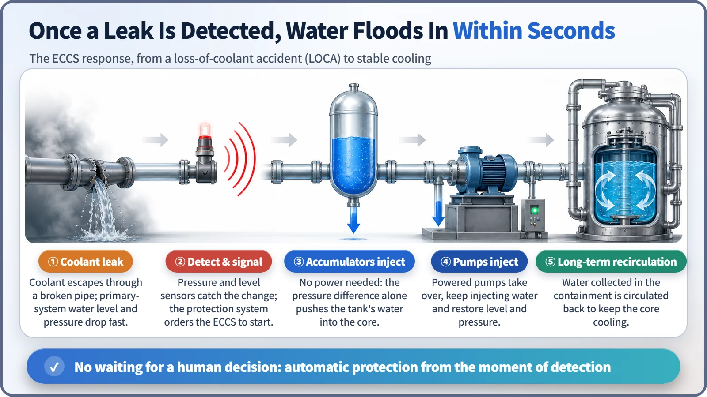
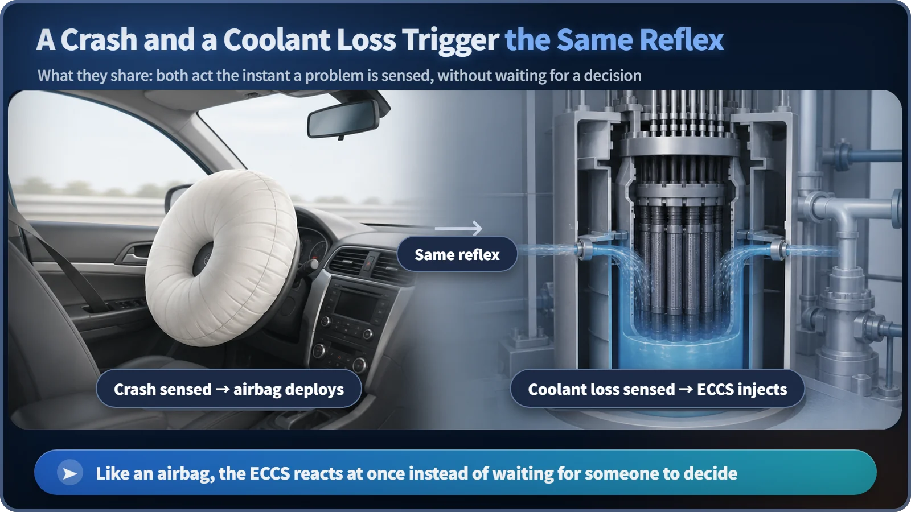

Reactor Components · 071
What If the Cooling Water Suddenly Vanished? — The Emergency Core Cooling System, Second by Second
When coolant escapes, the ECCS starts on its own the moment the loss is detected and keeps refilling the core through several independent trains.

If a pipe break lets the reactor coolant escape, nobody has time to run and turn a valve. The Emergency Core Cooling System (ECCS) is the standby safety system that starts automatically the moment the loss is detected and keeps refilling the core with water, through several independent trains.
Picture this first
Imagine the split second of a car crash. Nobody has time to think, "I should inflate the airbag now." The moment the impact is sensed, the airbags fire on their own, at the driver's seat and the passenger's seat at the same time.
A nuclear power plant has a moment like that, too. Suppose the reactor coolant (the water that carries heat away from the nuclear fuel) suddenly starts escaping because a pipe breaks. The situation will not wait for someone to run over and turn a valve. For exactly this moment there is equipment that is prepared in advance and starts automatically as soon as the problem is detected: the Emergency Core Cooling System (ECCS).
Time zero: a quiet beginning
The reactor core (the region where the nuclear fuel sits) is always filled with water, and that water carries the heat away. If a break somewhere in the piping or related equipment lets this water leave its normal path and drain out quickly, we have a loss-of-coolant accident, usually called a LOCA.
As the water drains, the level covering the core starts to fall. Here is the important part: even if the reactor is shut down at once and the fission chain reaction stops, the problem is not over. As we've seen before, the radioactive decay of fission products keeps producing decay heat for some time after shutdown. If that heat keeps coming while the coolant is missing, the fuel temperature can climb to a dangerous level within a short time.
A few seconds later: the alarm, and the signal
When instruments pick up abnormally low system pressure, a falling water level around the core, or rising pressure inside the containment building, something has to read those signals and order the emergency equipment to start. That decision belongs to the reactor protection system, which we looked at earlier.
Here is an important distinction: the protection system's job ends at sensing the danger and saying "now." The hands and feet that actually push water into the core are a separate system, the ECCS.
Right away: water pours in with no pump and no power
Ironically, one of the first responders is not a pump at all. It is a pressurized tank called an accumulator. It holds water kept under pressure by compressed gas. When the reactor system pressure falls below a certain level, that pressure difference alone opens the valve and pushes the water out. No electricity, no human action, not even a signal to start a pump is needed.
This is where the airbag comparison fits: a physical condition (the crash, here the pressure drop) is itself the trigger, with no separate decision step. The difference is that an airbag fires once and is done, while the accumulator is the first line of defense for refilling the core.

Next: the pumps take the baton
The accumulators' water alone cannot carry the whole accident. From there, electrically powered pumps take over and keep pushing water in. Early in an accident, while the system still has a fair amount of pressure, injection lines that can push water in against relatively high pressure do the work. If the break is large and the pressure has dropped a lot, injection lines that can deliver large volumes of water at low pressure take over. (The exact switchover conditions, such as pressure and level setpoints, and the names of these lines differ by reactor type and designer, so this post keeps to the concept.)
Even after the stored water has been used up, the response does not stop. It moves into a long-term phase: water that has collected at the bottom of the containment building is drawn back and circulated, so the water supply never runs dry until the core is cooling steadily again.
Squeezed down to its simplest form, the whole process comes to this relationship:
Water injected ≥ water lost through the break + water boiled off as steam by decay heat
It is not a precise design equation, but it shows why the key is not "add a little water" but "add enough, and keep adding it."
Why several layers instead of one?
When a fire detector senses smoke, sprinklers start spraying automatically. But most buildings don't trust a single sprinkler circuit; the system is split by zone and pipe run, so if one part fails, another still works.
The ECCS follows the same idea. It is not one machine but several trains (independent lines) that can each operate on their own, and each train has its own pumps, piping and power supply. The basic design premise is that if one train is down for maintenance or fails for some unexpected reason, the remaining trains alone must still be able to complete the job of cooling the core. Just as a car has separate airbags for the driver and the passenger, the point is never to rely on a single line of defense.
Easy mix-ups
"Once the reactor is shut down, there's no need to add water, right?" No. Shutting down the reactor only stops the fission chain reaction. It doesn't remove the core's heat instantly, and it doesn't bring back coolant that has already leaked out. If the accident has actually reduced the amount of coolant, putting water back in is essential.
The ECCS and the residual heat removal system handle different situations. The residual heat removal system, covered earlier, steadily removes the remaining decay heat after the reactor has been shut down normally, as planned, with the amount of coolant still intact. The ECCS, by contrast, is an emergency system focused on "refill the water first" when an accident is rapidly reducing the coolant itself. Some designs are known to have certain low-pressure injection equipment share components with the residual heat removal system, but this varies by reactor type, so we leave it aside here.
The ECCS is also different from the normal coolant loop and reactor coolant pumps. Those form the "everyday circulation system" that runs nonstop while the reactor generates power. The ECCS is an "emergency injection system" that waits on standby and works only when an accident is detected.
And the ECCS and the reactor protection system play different roles. The protection system is the "brain" that senses danger signals, shuts down the reactor and orders the safety equipment to start. The ECCS is the "hands and feet" that take that order and actually push water in.

Today's timeline in one place
- Time zero: an accident in which coolant escapes, for example through a broken pipe (a LOCA), begins.
- A few seconds later: abnormal pressure and level are detected, and the reactor protection system orders the emergency equipment to start.
- Right away: the accumulators pour water in on their own, using only the pressure difference, with no pump or power.
- Next: high- and low-pressure injection lines take over and keep refilling, leading on to long-term recirculation cooling.
- All of this is possible because not one device but several independent trains stand ready, layer upon layer.
The emergency core cooling system waits quietly, almost unnoticed, during normal operation. But when it is truly needed, it is designed to move on its own, second by second, without passing through human hands.